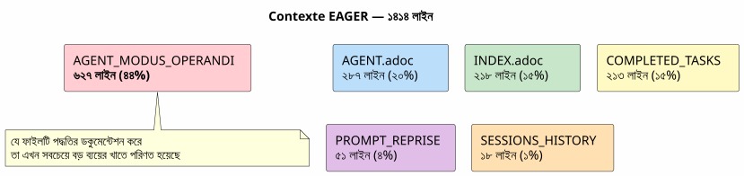
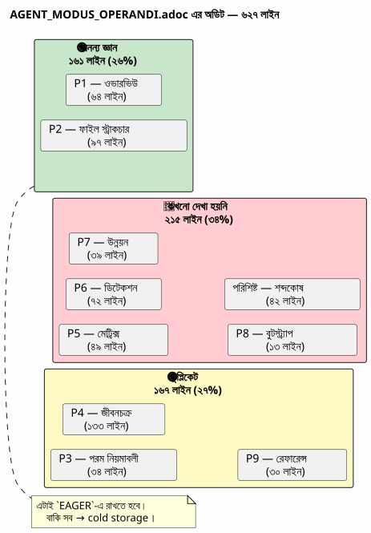
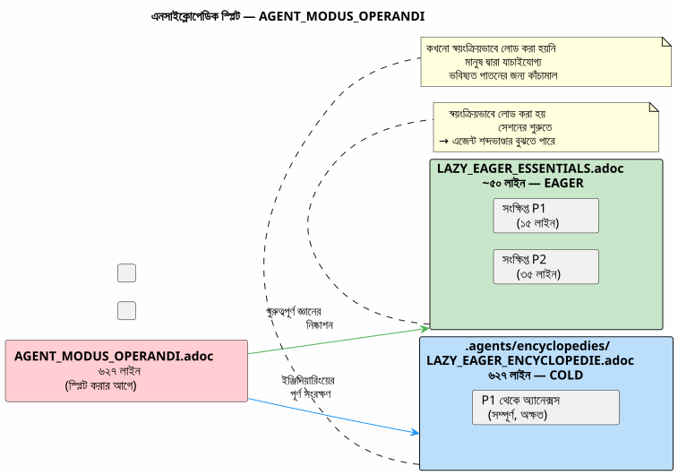
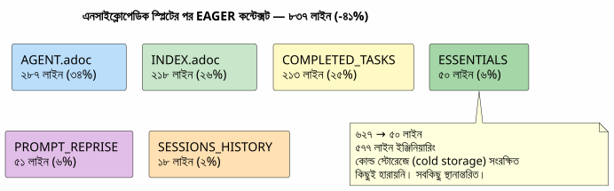
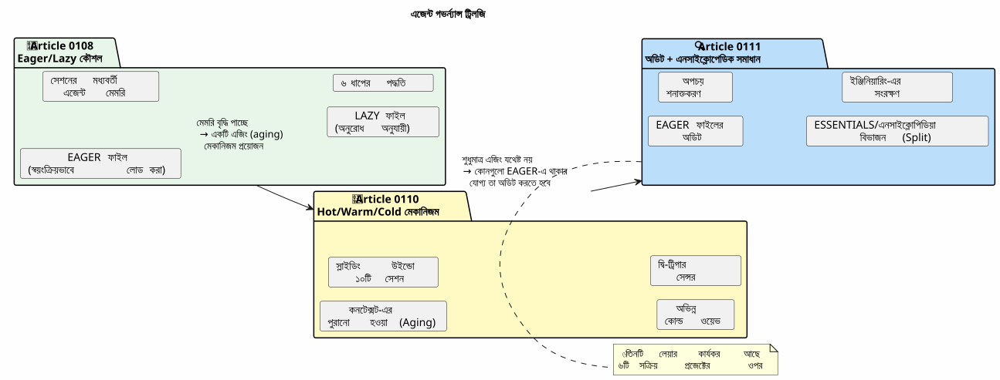
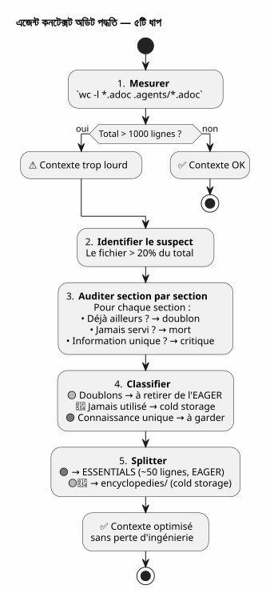
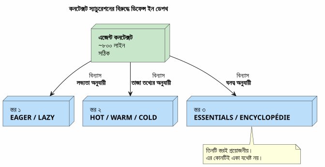

এজেন্ট কনটেক্সট অডিট: যখন আপনার নিজস্ব গভর্ন্যান্স নিজেই সমস্যা হয়ে দাঁড়ায় — এবং কিছু না হারিয়েই কীভাবে তা মেরামত করবেন
প্রকাশিত: 27 April 2026
- দৃশ্য: সেশন 051, কিছু একটা সমস্যা আছে
- অডিট: ৬২৭টি লাইন বিশদভাবে বিশ্লেষণ করা
- ইঞ্জিনিয়ারিং হারানোর ভয়
- সমাধান: এনসাইক্লোপেডিক split
- ESSENTIALS ফাইলের বিষয়বস্তু
- ফলাফল: -৫০% EAGER কনটেক্সট
- কেন ফোল্ডারটির নাম `encyclopedies/
- ধারার যৌক্তিক পরবর্তী অংশটি
- আমি যা ভিন্নভাবে করতাম
- আপনার নিজস্ব কনটেক্সট অডিট করার গাইড
- একটি জীবন্ত শাসনব্যবস্থা
- লিঙ্কসমূহ
আপনি একটি নিখুঁত এজেন্ট গভর্ন্যান্স তৈরি করতে কয়েক সপ্তাহ ব্যয় করেছেন। Eager/Lazy, সেশন সমাপ্তির পদ্ধতি, রোটেটিং ব্যাকআপ। সিস্টেমটি চলছে। তারপর একদিন, এজেন্টটি ধীর হয়ে যায়। উত্তরগুলো অস্পষ্ট হয়ে পড়ে। আপনি পরিমাপ করলেন: ১৪১৪টি লাইন স্বয়ংক্রিয়ভাবে লোড হয়েছে। আর সবচেয়ে খারাপ ব্যাপার হলো, এর জন্য কোড, ব্যাকলগ বা সেশন আর্কাইভ দায়ী নয়। আসল অপরাধী হলো সেই ফাইলটি যা আপনার পদ্ধতিটি নথিভুক্ত করে।
- সূচিপত্র
-
[]
দৃশ্য: সেশন 051, কিছু একটা সমস্যা আছে
৩০ এপ্রিল ২০২৬, ১৬:০০। আমি একটি সেশনের মধ্যে আছি sur`magic-stick, আমার লিনাক্স লাইভ আইএসও (Linux live ISO) বিল্ড প্রজেক্ট। ওপেনকোড (Opencode) এজেন্ট বরাবরের মতোই স্বয়ংক্রিয়ভাবে আমার ইগার (Eager) ফাইলগুলো লোড করেছে —AGENT.adoc, PROMPT_REPRISE.adoc, .agents/INDEX.adoc। সব কিছু স্বাভাবিক।
তবে উত্তরগুলো ঢিলেঢালা। এজেন্টটির চিন্তা করতে আরও দুই সেকেন্ড বেশি সময় লাগে। তিনটি মেসেজ আগে তার চোখের সামনে থাকা একটি ছোট বিষয় সে ভুলে যায়। এটি কোনো ক্র্যাশ নয়, কোনো ত্রুটি নয় — এটি একটি ধীরগতির অবনতি, যে ধরণের জিনিস সাথে সাথে চোখে পড়ে না।
আমি ইতিমধ্যে সেশন 048-এ এই অভিজ্ঞতার সম্মুখীন হয়েছিলাম, যখন আমি আবিষ্কার করেছিলাম যে গভর্নেন্স ফাইলগুলোর মোট দৈর্ঘ্য ৫২০০ লাইন। তখন আমি Hot/Warm/Cold মেকানিজমটি conceptualized করেছিলাম যার ১০টি সেশনের sliding window, অভিন্ন cold waves এবং দুটি trigger-এর একটি sensor ছিল। সমস্যাটি সমাধান হয়ে গিয়েছিল। তাত্ত্বিকভাবে।
কিন্তু এখন, আমরা সেশন 051-এ আছি। ব্যাকআপ রোটেশন সঠিকভাবে সম্পন্ন হয়েছে — EAGER ফাইলগুলো ২০৮৭ থেকে কমে ৫০০ লাইনে নেমে এসেছে। তবুও, কনটেক্সট ভারি রয়ে গেছে। কিছু একটা আমার নজর এড়িয়ে যাচ্ছে।
আমি একটি টার্মিনাল খুলি এবং টাইপ করি:
wc -l AGENT.adoc AGENT_MODUS_OPERANDI.adoc PROMPT_REPRISE.adoc \
.agents/INDEX.adoc .agents/SESSIONS_HISTORY.adoc \
.agents/archives/COMPLETED_TASKS_ARCHIVE_2026-04.adoc 287 AGENT.adoc
627 AGENT_MODUS_OPERANDI.adoc
51 PROMPT_REPRISE.adoc
218 .agents/INDEX.adoc
18 .agents/SESSIONS_HISTORY.adoc
213 .agents/archives/COMPLETED_TASKS_ARCHIVE_2026-04.adoc
1414 total১৪১৪টি লাইন। ব্যাকআপ রোটেশন INDEX, SESSIONS_HISTORY এবং COMPLETED_TASKS-এর অপ্রয়োজনীয় অংশগুলো সঠিকভাবে ছেঁটে ফেলেছে — সেগুলো এখন পরিষ্কার। কিন্তু এখানে একটি বড় সমস্যা (éléphant dans la pièce) আছে যা আমি লক্ষ্য করিনি:৬২৭ লাইনএকটি মাত্র ফাইলে।`AGENT_MODUS_OPERANDI.adoc`আপনার অনুবাদ এখানে প্রদান করুন।
এই ফাইলটি হলো সেটি যা আমি প্রথম সেশনে Eager/Lazy স্ট্র্যাটেজি ডকুমেন্ট করার জন্য লিখেছিলাম। এটি এই পদ্ধতির ম্যানুয়াল। এবং এটি একাই EAGER কনটেক্সটের ৪৪% হয়ে দাঁড়িয়েছে।

বিদ্রূপটি এখানে চরম। যে ফাইলটি কনটেক্সট সঞ্চয় করার জন্য তৈরি করা হয়েছিল, সেটিই এখন কনটেক্সটের প্রধান ভোক্তায় পরিণত হয়েছে। এটি অনেকটা এমন যে আপনার গাড়ির ব্যবহার নির্দেশিকাটি তার ইঞ্জিনের চেয়েও বেশি ভারী।
অডিট: ৬২৭টি লাইন বিশদভাবে বিশ্লেষণ করা
আমি সেকশন বাই সেকশন একটি অডিট করার সিদ্ধান্ত নিয়েছি। মুছে ফেলার জন্য নয় — বরং এটা বোঝার জন্য যে কোন জিনিসগুলো EAGER-এ থাকা উচিত এবং কোনগুলো জ্ঞানের কোনো ক্ষতি ছাড়াই অন্য কোথাও থাকতে পারে।
এখানে সঠিক কাঠামোটি হলো`AGENT_MODUS_OPERANDI.adoc`এবং আমি সেখানে যা পাই:
বিভাগ |
লাইনসমূহ |
বিষয়বস্তু |
ইতিমধ্যেই উপস্থিত… |
P1 — ওভারভিউ |
64 |
সমস্যা সমাধান করা হয়েছে, মৌলিক নীতিসমূহ, ড্যাশবোর্ড বনাম ম্যানুয়াল অ্যানালজি |
অনুগ্রহ করে আপনার অনুবাদ করতে চাওয়া ফরাসি টেক্সটটি প্রদান করুন। |
P2 — ফাইলের গঠন |
97 |
ডিরেক্টরি স্ট্রাকচার, লোডিং পলিসি, কখন কী লোড করতে হবে |
আপনার প্রফেশনাল অনুবাদক হিসেবে আমি ফরাসি থেকে বাংলা অনুবাদ করব। |
P3 — পরম নিয়মাবলী |
34 |
Git নিষিদ্ধ, ধ্বংসাত্মক কমান্ড নিষিদ্ধ, সিক্রেট নিষিদ্ধ |
|
P4 — সেশনের জীবনচক্র (Cycle de vie session) |
133 |
ওপেনিং টেমপ্লেট, কাজের নিয়ম, সেশন শেষের ৬টি ধাপ, চেকলিস্ট |
|
P5 — মেট্রিক এবং থ্রেশহোল্ড |
49 |
আদর্শ সেশন (১৫-৩০ মিনিট, ১-৩টি ফাইল), সতর্ক সংকেত |
অনুগ্রহ করে অনুবাদ করার জন্য পাঠ্যটি প্রদান করুন। |
P6 — সেশনের প্রকারভেদ |
72 |
শনাক্তকরণ টেবিল, প্রস্তাবনার ফরম্যাট, ব্যতিক্রমসমূহ |
অনুগ্রহ করে আপনার অনুরোধটি প্রদান করুন। |
P7 — নিরন্তর উন্নতি |
39 |
ট্র্যাকিং মেট্রিক্স, সাপ্তাহিক পর্যালোচনা |
আপনার অনুরোধ অনুযায়ী অনুবাদটি প্রদান করা হলো। অনুগ্রহ করে টেক্সটটি প্রদান করুন। |
P8 — স্টার্টআপ চেকলিস্ট |
13 |
নতুন প্রজেক্ট বুটস্ট্র্যাপ করুন |
অনুগ্রহ করে আপনার অনুরোধটি প্রদান করুন। |
P9 — তথ্যসূত্র |
30 |
রেফারেন্স ফাইল, বাহ্যিক রিসোর্স |
|
সংযুক্তি A+B |
42 |
শব্দকোষ, ভার্সন ইতিহাস |
অনুগ্রহ করে আপনার অনুরোধটি প্রদান করুন। |
রায়টি চূড়ান্ত:
-
সম্পূর্ণ ডুপ্লিকেটসমূহ(১৬৭ লাইন): P3, P4, P9 — সবকিছু ইতিমধ্যেই আছে`AGENT.adoc` ou
INDEX.adoc, প্রায়শই শব্দানুসারে -
ব্যবহারিক ক্ষেত্রে কখনও দেখা হয়নি(২১৫ লাইন): P5, P6, P7, P8, পরিশিষ্ট — মেটা-গভর্ন্যান্স থেকে যা কোনো সেশনেই ব্যবহৃত হয়নি
-
অনন্য জ্ঞান(১৬১ লাইন): P1 এবং P2 — LAZY/EAGER শব্দভাণ্ডার, উপমা, লোডিং পলিসি
৬২৭ লাইনের মধ্যে,৩৮২টি হলো নয়েজ. এবং এই ৩৮২টি লাইন প্রতিটি সেশনের শুরুতে লোড হয়, যা এজেন্ট দ্বারা ব্যবহৃত হয় এবং আমি হাই বলার আগেই তার মনোযোগ কমিয়ে দেয়।

এই ডায়াগ্রামটিই সবকিছুর মূল। ডুপ্লিকেটগুলো (হলুদ) বিশুদ্ধ নয়েজ — এজেন্ট এগুলো দুটি আলাদা ফাইলে দুবার পড়ে। যা কখনোই দেখা হয়নি (লাল) তা মৃত ডকুমেন্টেশন — যত্ন সহকারে লেখা, কিন্তু কখনোই ব্যবহৃত হয়নি। শুধুমাত্র সবুজ অংশে এমন জ্ঞান রয়েছে যা এজেন্ট অন্য কোথাও খুঁজে পায় না।
ইঞ্জিনিয়ারিং হারানোর ভয়
এই পর্যায়ে, প্রমাণ আমার চোখের সামনে: আমাকে কমাতে হবে`AGENT_MODUS_OPERANDI.adoc`। কিন্তু আমি দ্বিধায় আছি।
এই ফাইলটি আমি হাতে লিখেছি। প্রতিটি বিভাগ বাস্তব সেশনের অভিজ্ঞতায় শেখা পাঠের ফলাফল। P3 অংশটি জন্ম নিয়েছে একটি`rm -rf`দুর্ঘটনাবশত এর উপর`bakery-plugin`যা আমার আসল Firebase টোকেন খরচ করেছে। P4 অংশটি ছিল পনেরটি সেশনের ফলাফল যেখানে আমি আর্কাইভ করতে ভুলে গিয়েছিলাম এবং খেই হারিয়ে ফেলেছিলাম। ৬ ধাপের এই পদ্ধতিটি কোনো বই থেকে আসেনি — এটি এসেছে কষ্টের অভিজ্ঞতা থেকে।
এই সেকশনগুলো মুছে ফেলা মানে হবে আমার নিজের ইঞ্জিনিয়ারিংয়ের ইতিহাসকে ছুড়ে ফেলে দেওয়া। যে শিক্ষাগুলো এগুলো তৈরি করেছে, যে সেশনগুলোতে আমি এগুলো আবিষ্কার করেছি, এবং যে ভুলগুলো আমি আর কখনোই করতে চাই না। এটি কেবল টেক্সট নয় — এটি স্ফটিকীভূত অভিজ্ঞতা।
ঠিক এখানেই আমি সেই নীতিটি তৈরি করি যা সমাধানটিকে নির্দেশ করবে:
অনুগ্রহ করে আপনার টেক্সটটি প্রদান করুন যা আপনি অনুবাদ করতে চান। কখনো মুছবেন না। সর্বদা স্থানান্তরিত করুন।জ্ঞানকে প্রকল্প থেকে সরিয়ে ফেলার প্রয়োজন নেই। যখন এর প্রয়োজন হবে না, তখন এটি যেন স্বয়ংক্রিয়ভাবে লোড না হয়, শুধু সেটুকুই যথেষ্ট। Please provide the French text you would like me to translate.
সমাধান: এনসাইক্লোপেডিক split
আমি যে মডেলটি প্রস্তাব করছি তা সহজ এবং উইকিপিডিয়া যেভাবে বেড়েছে তার দ্বারা অনুপ্রাণিত: যখন একটি নিবন্ধ খুব দীর্ঘ হয়ে যায়, তখন আমরা এটিকে কেটে ছোট করি না — বরং একটি বিস্তারিত নিবন্ধ তৈরি করি এবং মূল নিবন্ধে একটি সারাংশ রাখি।
জন্য`AGENT_MODUS_OPERANDI.adoc`, এটি দেয়:
-
নিষ্কাশন করুনএকটি নতুন ফাইলে ১৬১টি ইউনিক নলেজ লাইন (P1 + P2)
LAZY_EAGER_ESSENTIALS.adoc— ~৫০ লাইনে সংকুচিত, কঠোরভাবে EAGER -
নাম পরিবর্তন করুন
AGENT_MODUS_OPERANDI.adocen.agents/encyclopedies/LAZY_EAGER_ENCYCLOPEDIE.adoc— ৬২৭ লাইনের মূল ফাইলটি, যা অক্ষত অবস্থায় কোল্ড স্টোরেজে (cold storage) রাখা হয়েছে -
কখনোই চার্জ করবেন নাএনসাইক্লোপিডিয়া ফাইলটি স্বয়ংক্রিয়ভাবে — এটি মানুষের জন্য, ভবিষ্যতের ডিস্টিলেশনের জন্য, সেই এজেন্টের জন্য যাকে আমরা ছয় মাস পরে একটি উন্নত মডেল দিয়ে আহ্বান করব

নামটি`encyclopedies/`সামান্য বিষয় নয়। একটি বিশ্বকোষ কোনো আর্কাইভ ফাইল নয় — এটি সংগঠিত জ্ঞানের একটি সংগ্রহ, যা দেখা বা যাচাই করা যায় কিন্তু বহনযোগ্য নয়। মানুষ মেট্রোতে বসে Encyclopédie Universalis পড়ে না। এটি লাইব্রেরিতে রাখা হয়, এবং যখন কোনো নির্দিষ্ট প্রশ্ন থাকে তখন সেখানে যাওয়া হয়।
এই ফোল্ডারের ভূমিকা ঠিক এটাই: একটি কোল্ড রেফারেন্স লাইব্রেরি, যা সুগঠিত এবং বিস্তারিত — যা এজেন্ট স্বয়ংক্রিয়ভাবে স্পর্শ করবে না।
ESSENTIALS ফাইলের বিষয়বস্তু
নতুন ফাইলটি বাস্তবে দেখতে কেমন হবে তা এখানে দেওয়া হলো`LAZY_EAGER_ESSENTIALS.adoc`, P1 এবং P2 থেকে সংগৃহীত এবং সংকুচিত:
= Stratégie LAZY/EAGER — Principes Essentiels
[abstract]
Ce fichier définit la stratégie de gestion du contexte agent.
Chargé automatiquement (EAGER) en début de session.
== Principes
|===
| EAGER | LAZY
| Tableau de bord | Manuel du propriétaire
| Chargé automatiquement | Chargé sur demande
| <= 100 lignes, <= 10k tokens | Illimité, détaillé
| Règles absolues, mission courante | Archives, historique, références
|===
== Politique de Chargement
|===
| Fichier | Type | Quand charger
| PROMPT_REPRISE.adoc | EAGER | Début session (auto)
| *_ESSENTIALS.adoc | EAGER | Début session si EPIC active
| .agents/INDEX.adoc | EAGER | Début session (auto)
| *_REFERENCE.adoc | LAZY | Sur besoin (détails architecture)
| .agents/sessions/N-*.adoc | LAZY | Sur demande (détails session)
| .agents/encyclopedies/*.adoc | COLD | Jamais auto (humain seulement)
|===
== Comment l'Agent Sait Quoi Charger
Début session → PROMPT_REPRISE + INDEX + ESSENTIALS actifs.
Besoin de détails → charger les *_REFERENCE et sessions/ en LAZY.
Connaissance froide → encyclopedies/, jamais automatique.পঞ্চাশটি লাইন। মেকানিক্সটি বোঝার জন্য এজেন্টের এটুকুই প্রয়োজন। বাকি সবকিছু — পাঠের ইতিহাস, বিস্তারিত উপমা, ধাপে ধাপে নির্দেশিকা, পরিশিষ্ট — এনসাইক্লোপিডিয়াতে থাকে।
এবং সবচেয়ে গুরুত্বপূর্ণ হলো:কিছুই মুছে ফেলা হয়নি। ৬২৭টি ইঞ্জিনিয়ারিং লাইন এখনও সেখানে আছে, যার মধ্যে`.agents/encyclopedies/LAZY_EAGER_ENCYCLOPEDIE.adoc`। সেগুলো ওয়ার্কটপের পরিবর্তে লাইব্রেরিতে সাজিয়ে রাখা হয়েছে।
ফলাফল: -৫০% EAGER কনটেক্সট
স্প্লিটের আগে:
287 AGENT.adoc
627 AGENT_MODUS_OPERANDI.adoc
51 PROMPT_REPRISE.adoc
218 .agents/INDEX.adoc
18 .agents/SESSIONS_HISTORY.adoc
213 .agents/archives/COMPLETED_TASKS_ARCHIVE_2026-04.adoc
1414 totalস্প্লিট-এর পর:
287 AGENT.adoc
50 LAZY_EAGER_ESSENTIALS.adoc ← remplace 627 lignes
51 PROMPT_REPRISE.adoc
218 .agents/INDEX.adoc
18 .agents/SESSIONS_HISTORY.adoc
213 .agents/archives/COMPLETED_TASKS_ARCHIVE_2026-04.adoc
837 total ← -41%
সবচেয়ে বড় কনজিউমার (AGENT_MODUS_OPERANDI, ৬২৭ লাইন) একটি ৫০ লাইনের ফাইল দ্বারা প্রতিস্থাপিত হয়েছে। এর লাভ তাৎক্ষণিক: ৫৭৭ লাইনের কনটেক্সট মুক্ত হয়েছে। এজেন্টটি এখন স্বস্তিতে আছে।
এবং এর মধ্যে`.agents/encyclopedies/`, ৬২৭ লাইনের মূল ফাইলটি অপেক্ষা করছে। অক্ষত। এর সমস্ত সেকশন সহ — এমনকি যেগুলো ডুপ্লিকেট, যেগুলো কখনো ব্যবহৃত হয়নি সেগুলোসহ। কারণ একদিন, কোনো উন্নত মডেল বা কোনো মানব ডেটা সায়েন্টিস্ট এই দৃষ্টিভঙ্গিগুলো, এই স্বীকৃত পুনরাবৃত্তিগুলো এবং অর্জিত শিক্ষাগুলোর মধ্যে সমন্বয় করতে চাইবে। আর সেদিন, কাঁচামালটি সেখানেই থাকবে।
কেন ফোল্ডারটির নাম `encyclopedies/
নামের পছন্দটি কেবল বাহ্যিক সৌন্দর্যের জন্য নয়। এটি মেকানিজমের দর্শনকে সংজ্ঞায়িত করে।
একটি আর্কাইভ (archives/) contains ঐতিহাসিকভাবে সাজানো ডেটা — যেমন মাসিক COMPLETED_TASKS। একটি backup (backup/) হলো একটি টাইমস্ট্যাম্পড স্ন্যাপশট — অতীতের একটি অবস্থার ব্যাকআপ কপি।
একটি এনসাইক্লোপিডিয়া বা বিশ্বকোষ সম্পূর্ণ ভিন্ন জিনিস। এটি বিষয়ভিত্তিক জ্ঞানের একটি সংগ্রহ, যা বিষয় অনুযায়ী বিন্যস্ত, বিস্তারিত কিন্তু অ-রৈখিক। কেউ বিশ্বকোষ শুরু থেকে শেষ পর্যন্ত পড়ে না। নির্দিষ্ট কোনো প্রশ্নের উত্তর খুঁজতে এতে ডুব দেওয়া হয়।
এই ফোল্ডারের চুক্তিটি ঠিক এরকম:
নথি |
ভূমিকা |
প্রবেশাধিকার |
গ্র্যানুলারিটি |
|
ঐতিহাসিক ডেটা (প্রতি মাসে সম্পন্ন হওয়া কাজ) |
আলস্যপূর্ণ, সুগঠিত |
কালানুক্রমিক |
|
কোল্ড স্ন্যাপশট (১০টি সেশনের তরঙ্গ) |
COLD, পূর্ণ প্রতিলিপি |
কালানুক্রমিক |
|
বিষয়ভিত্তিক ব্যাপক জ্ঞান (পদ্ধতি, প্যাটার্ন) |
COLD, কখনোই auto নয় |
বিষয়বস্তু |
এই পার্থক্য সবকিছুকে একসাথে মিশিয়ে ফেলা রোধ করে। প্রতিটি ফাইল জানে যে এর ভেতরে কী আছে তার ওপর ভিত্তি করে এটি কোথায় থাকা উচিত, কখন তৈরি করা হয়েছে তার ওপর ভিত্তি করে নয়।
ধারার যৌক্তিক পরবর্তী অংশটি
আপনি যদি প্রথম দুটি নিবন্ধ পড়ে থাকেন, তবে এই তিনটি অংশ যেভাবে একে অপরের সাথে খাপ খায় তা এখানে দেওয়া হলো:

-
0108উত্তর দেয়: «দুটি সেশনের মাঝে এজেন্টকে কীভাবে মেমরি দেওয়া যায়?
-
0110এর উত্তর দেয়: «কিভাবে এই মেমরিকে এজেন্টকে দমিয়ে রাখা থেকে আটকানো যায়?
-
0111এর উত্তর দেয়: «আর যদি সমস্যাটি আর্কাইভের আকার না হয়ে, আমরা কী EAGER হিসেবে বেছে নিয়েছি তা হয়?
প্রথম নিবন্ধটি কাঠামোটি তৈরি করেছে। দ্বিতীয়টি বার্ধক্যের প্রক্রিয়াটি যুক্ত করেছে। তৃতীয়টি বিষয়বস্তু নিরীক্ষা করে — এবং আবিষ্কার করে যে পদ্ধতিটি নিজেই সমস্যা হয়ে দাঁড়িয়েছে।
আমি যা ভিন্নভাবে করতাম
পেছনের দিকে তাকালে, আমি প্রাথমিক নকশার ভুলটি দেখতে পাচ্ছি।`AGENT_MODUS_OPERANDI.adoc`একটি একক ডকুমেন্ট — একটি ম্যানিফেস্টো হিসেবে তৈরি করা হয়েছিল। চিন্তাটিকে আনুষ্ঠানিকভাবে রূপ দেওয়ার জন্য এটি সঠিক পদ্ধতি ছিল। কিন্তু চিন্তাটি আনুষ্ঠানিকভাবে রূপ নেওয়ার পর, ডকুমেন্টটিকে অবিলম্বে split করা উচিত ছিল: প্রয়োজনীয় অংশটুকু EAGER-এ এবং বিস্তারিত অংশটুকু cold-এ।
আমি এটি করিনি কারণ আমি ডকুমেন্টটি নিয়ে গর্বিত ছিলাম। বিশুদ্ধ ইঞ্জিনিয়ারিংয়ের ৬২৭টি লাইন, যা হাতে লেখা, যার প্রতিটি বিভাগ ছিল একটি সেশন লেসনের ফল। এটি ছিল আমার সৃষ্টি। আর সব লেখকের মতোই, এটি কেটে ছোট করতে আমার কষ্ট হচ্ছিল।
পাঠটি:একটি ডকুমেন্ট ভালো হওয়ার মানেই এই নয় যে এটি স্বয়ংক্রিয়ভাবে লোড হতে হবেকন্টেন্টের গুণমানের সাথে এজেন্টের তাৎক্ষণিক প্রসঙ্গের প্রাসঙ্গিকতার কোনো সম্পর্ক নেই।
আজকের নিয়মটি সহজ: EAGER কন্টেক্সটে ১০০ লাইনের বেশি যেকোনো ডকুমেন্টই সন্দেহভাজন। এটি অডিটের যোগ্য। দণ্ড নয়—একটি অডিট। আর প্রশ্নটি কখনোই এটা নয় যে "এটি কি মুছে ফেলা উচিত?", বরং "এটি কি প্রতিটি সেশনে লোড করা প্রয়োজন?
আপনার নিজস্ব কনটেক্সট অডিট করার গাইড
আপনি যদি প্রথম দুটি নিবন্ধ অনুসরণ করে থাকেন এবং আপনার নিজস্ব Eager/Lazy গভর্ন্যান্স স্থাপন করে থাকেন, তবে এখানে পাঁচ ধাপের একটি অডিট পদ্ধতি দেওয়া হলো:
-
পরিমাপ করুনঅনুগ্রহ করে আপনার অনুরোধটি প্রদান করুন।`wc -l`আপনার সমস্ত EAGER ফাইলের জন্য। মোট লাইন সংখ্যা ১০০০-এর নিচে হওয়া উচিত।
-
সবচেয়ে বড়টি চিহ্নিত করুন: যে ফাইলটির আকার মোট আকারের ২০%-এর বেশি, সেটিই প্রধান সন্দেহভাজন।
-
সেকশন অনুযায়ী অডিট করা: প্রতিটি সেকশনের জন্য নিজেকে প্রশ্ন করুন "এই তথ্যটি কি ইতিমধ্যে অন্য কোথাও আছে? এজেন্ট কি এটি অন্য কোনো ফাইলে ইতিমধ্যে পড়েছে? এটি কি গত ৫টি সেশনে ব্যবহৃত হয়েছে?
-
শ্রেণীবিন্যাসকারী (Classifier): ডুপ্লিকেট, কখনোই ব্যবহৃত হয়নি, অনন্য জ্ঞান।
-
স্প্লিট করুন অথবা রিলোকেট করুন: যা অনন্য এবং গুরুত্বপূর্ণ → সংকুচিত ESSENTIALS। বাকি সব কিছু →`encyclopedies/`অনুগ্রহ করে আপনার অনুবাদ করার জন্য টেক্সটটি প্রদান করুন।

এই প্রক্রিয়াটি সম্পন্ন করতে ১৫ মিনিট সময় লাগে। ৫০টি সেশনের একটি প্রজেক্টের ক্ষেত্রে, এটি প্রতিটি ভবিষ্যৎ সেশনে শত শত টোকেন সাশ্রয় করে। এর ROI তাৎক্ষণিক।
একটি জীবন্ত শাসনব্যবস্থা
তিনটি নিবন্ধের এই ধারাবাহিকতা থেকে আমি যা শিখেছি তা হলো, এজেন্ট গভর্ন্যান্স কোনো চূড়ান্ত পণ্য নয়। এটি একটিজীবন্ত organism। এটি প্রকল্পের সাথে সাথে বৃদ্ধি পায়। এটি বৃদ্ধিরজনিত রোগে আক্রান্ত হয়। এর জন্য নিয়মিত চেক-আপের প্রয়োজন।
০৪৮ সেশনটি প্রকাশ করেছে যে আর্কাইভগুলো বড় হচ্ছে। ০৫১ সেশনটি প্রকাশ করেছে যে পদ্ধতিটি নিজেই বড় হচ্ছে। ০৬০ সেশন সম্ভবত অন্য কিছু প্রকাশ করবে। এটি স্বাভাবিক। এটি স্বাস্থ্যকর। যে শাসনব্যবস্থা কখনো নিজেকে প্রশ্ন করে না, তা একটি মৃত শাসনব্যবস্থা।
প্রবর্তিত তিনটি মেকানিজম — Eager/Lazy, Hot/Warm/Cold, split encyclopédique — কনটেক্সট স্যাচুরেশনের বিরুদ্ধে একটি ডিফেন্স-ইন-ডেপথ সিস্টেম গঠন করে। কোনোটিই একা যথেষ্ট নয়। একত্রে, তারা একে অপরের পরিপূরক:
-
তৎপর/আলসে (Eager/Lazy)তথ্যকে লভ্যতা অনুযায়ী বিন্যস্ত করে
-
তপ্ত/উষ্ণ/শীতলতথ্যকে তাজা থাকার সময় অনুযায়ী সাজায়
-
এনসাইক্লোপেডিক অডিটতথ্যকে ঘনত্বের ভিত্তিতে সাজায়

এই তিনটি লেয়ারের সাথে, এজেন্টের কনটেক্সট (context agent) এর ওপর`magic-stick`২০৮৭ লাইন (যেকোনো অপ্টিমাইজেশনের আগে) থেকে কমে প্রায় ৮০০ লাইনে নেমে এসেছে — যা ২.৬ গুণ হ্রাস। কোনো ডকুমেন্টেশন, কোনো সেশন আর্কাইভ বা কোনো অর্জিত শিক্ষা—একটি লাইনও না হারিয়ে।
সবকিছু এখানেই আছে। শুধু আরও সুন্দরভাবে সাজানো।
লিঙ্কসমূহ
-
অনুচ্ছেদ 0108 — Eager/Lazy কৌশল:AsciiDoc-এর মাধ্যমে একটি AI এজেন্ট পরিচালনা করা
-
অনুচ্ছেদ 0110 — Hot/Warm/Cold মেকানিজম:Sliding Window এবং Vague Froide
-
আমার সাইট: https://cheroliv.com
-
প্রকল্পটি`magic-stick`: https://github.com/cheroliv/magic-stick
জ্ঞানের বিলীন হওয়ার প্রয়োজন নেই। এটি কেবল তখন লোড না হলে চলে যখন এর প্রয়োজন নেই।